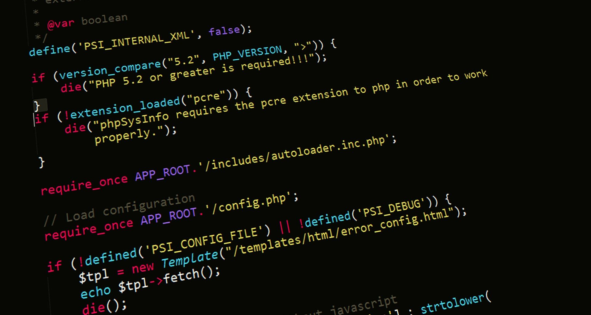

PROJECT EXPERIENCE
Personal Web Developer Portfolio
GitHub: https://github.com/Novian333/novian333.github.io
Designed and developed a personal portfolio website using HTML and CSS.
Organized website content to showcase technical skills, projects, and professional information.
Worked on responsive layouts, visual presentation, and website navigation.
Used Git and GitHub to manage source code and track development progress.
NorthStar Adventure Co., UI/UX Design Project,Figma Design project.
Designed a high-fidelity mobile application concept for a Canadian outdoor adventure company.
Created user interface layouts for hiking, camping, and kayaking experiences.
Developed interactive navigation and user-friendly screen transitions.
Applied UI/UX principles to improve usability and the mobile experience.
BloomByte Technologies, Gardening Technology Project
GitHub: https://github.com/Novian333/VCC_3
Developed a project concept for a smart indoor plant-care technology platform.
Planned features including watering reminders, plant identification, growth tracking, and personalized recommendations.
Created project documentation, installation instructions, and usage guides.
Used GitHub repositories and Wiki documentation to organize project information.
CORE COMPETENCIES
Responsive website development
User interface and user experience design
Creative problem solving
Attention to detail
Independent learning and adaptability
Version control and project documentation
Communication and teamwork
CAREER OBJECTIVE
Seeking a Junior Web Developer, UI/UX Design, Web Development Internship, or entry-level IT opportunity where I can contribute my developing technical skills, gain practical industry experience, and grow within a professional technology team.